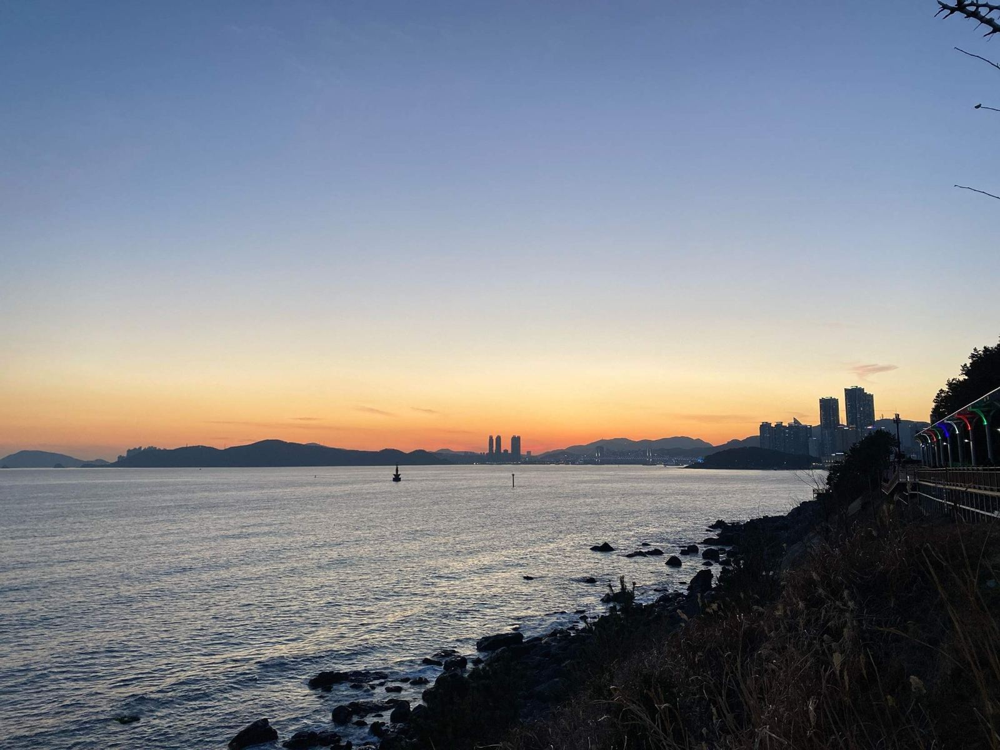
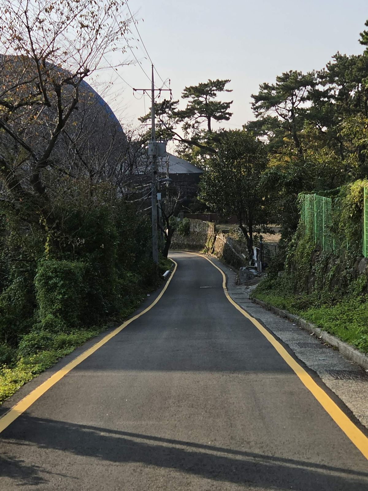
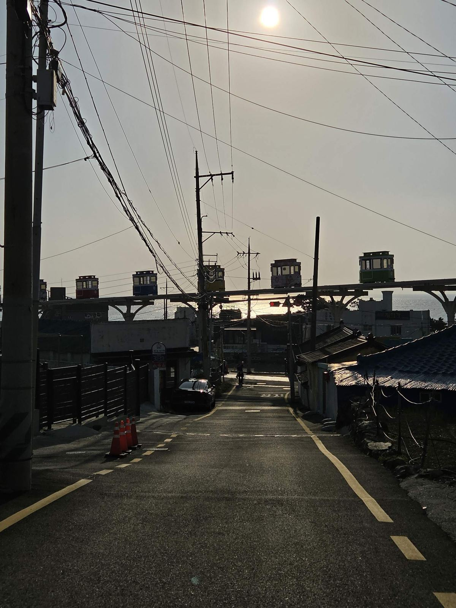

Do Busan with a local.
Not a tour. Not a dating app. Just Busan locals and travelers doing the same thing together, for free.
Three steps to a local day
Tell us what you'd love to do. We'll find a Busan local who loves it too.
- 1
Tell us your plan
Pick activities, dates and languages in a 3-minute form.
- 2
We connect you
We match you with an ID-checked local and introduce you both, usually within 1–2 days.
- 3
Meet and enjoy
Meet in a public place and do the activity together. Everyone pays their own way.
What you can do together
From a morning run on the beach to cheering at a baseball game.
Walks & nature
Coastal trails, beaches, easy hikes
Sports
Running, surfing, futsal
Games
Cheer for the Lotte Giants at Sajik
Food & markets
Pork soup, milmyeon, market snacks, cafés
Culture & art
Gamcheon, galleries, local shows
By the sea
Yachts, cable car, beach train
Busan, the way locals see it
Real tips from real locals, every week on Instagram.



Simple rules, for everyone
- Meet only in public places, and wrap up by 10 pm.
- No home or hotel visits, and no rides in private cars.
- Not a dating app. Unwanted advances get you removed.
- Every local passes an ID check and a short video call first.
- Everyone pays for their own food, tickets and transport.
Something feel off?
Message us on Instagram any time, before or during your meetup. We check every report right away.
Message us on InstagramLive in Busan? Become a LoKo.i local.
Meet travelers from around the world, practice languages, and show off your city, on your own schedule.
Join as a localGood questions
Is it really free?
Yes. LoKo.i is free for travelers and locals. We never charge for a connection.
Is this a guided tour?
No. Locals are not paid guides. You are simply two people who enjoy the same thing, doing it together.
Who are the locals?
People who live in Busan and want to meet travelers. Each one passes an ID check and a short video call before their first meetup.
Which languages?
Most locals speak English, and some speak Chinese or Japanese. Tell us your languages in the form and we will match you.
How soon will I hear back?
Usually within 1–2 days. If you can, apply at least 3 days before the date you want.